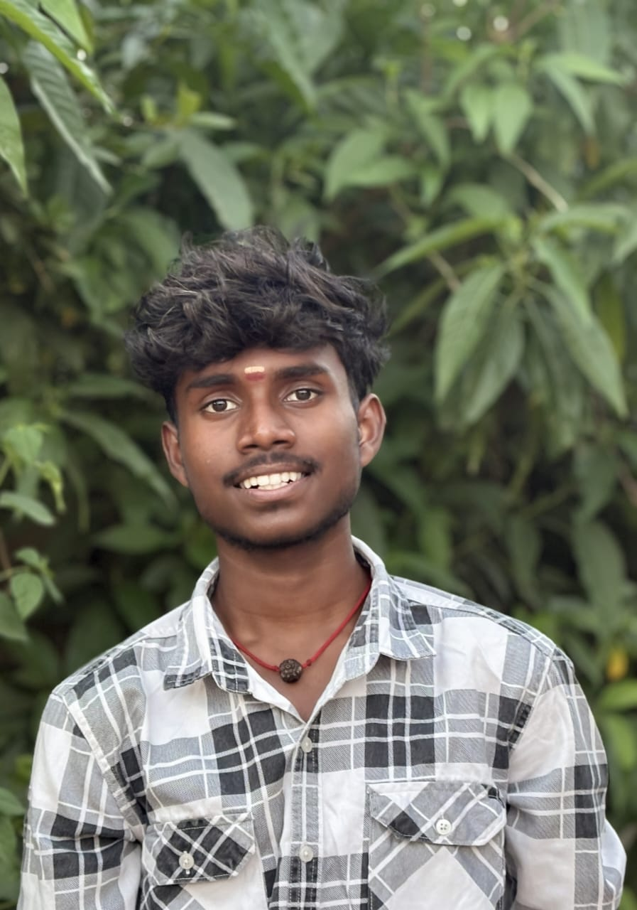

ABISHEK.M
FULLSTACK DEVELOPER / VIBE CODER / CREATOR
Abishek is a Full Stack Developer who works across both frontend and backend development, turning ideas into complete products with practical structure and scalable code. From interactive interfaces to API integration and system logic, he likes building solutions that perform well and feel intuitive to use.
He is focused on building modern web applications that are clean, responsive, and reliable. He enjoys creating digital experiences that balance strong functionality with smooth and thoughtful design.
Responsive UI systems
API-driven features
Fast iteration loops
My Team Members
Visual Signal
A portfolio that looks like it builds things.
More motion, more graphics, and more product atmosphere so the site feels like a live creative system instead of a static profile page.
Explore By Page
Jump into the parts that matter most.
The portfolio now has dedicated pages for projects, stack, about, and contact so the experience feels cleaner and more intentional.
Projects
Live GitHub showcase
See repository cards, project highlights, and the live account feed for `asedits57`.
Open projects page StackCapabilities and tooling
Explore the frontend, backend, workflow, and shipping layers behind the portfolio story.
Open stack page AboutHow the work gets built
Read the build style, process, and product mindset behind the code and visual decisions.
Open about page ContactStart a collaboration
Use the contact page as the entry point for collaborations, GitHub exploration, and project conversations.
Open contact pageHow This Portfolio Feels
Built for product energy, not template energy.
The goal is to present a developer who can move between product thinking, visual execution, and technical delivery with confidence.
Frontend That Moves
Clean structure, expressive visuals, strong hierarchy, and layouts that feel intentional on both desktop and mobile.
Backend Thinking
API-first planning, data-aware UI states, resilient fallbacks, and a bias toward systems that keep working after launch.
Fast Shipping Loops
The vibe coder edge: fast iteration, smart automation, and enough engineering discipline to turn speed into shipped value.
GitHub Showcase
Projects pulled live from the AS_Edits / ABISHEK.M account.
This section auto-loads public repositories from GitHub so the portfolio stays fresh as new work lands.
About The Build Style
High-level fullstack thinking from interface to infrastructure.
ABISHEK.M, working professionally as AS_Edits, is positioned as a fullstack developer who can own the complete product path: shaping user-facing experiences, designing reliable backend flows, and making technical decisions that support long-term product growth.
The focus is not only on building fast, but on building well: scalable architecture, clean APIs, responsive interfaces, maintainable code, and delivery standards that hold up in real production environments.
End-to-end ownership
From frontend polish to backend structure, the work is framed as complete product delivery rather than isolated implementation.
Architecture mindset
Data flow, performance, state handling, integrations, and system clarity are treated as core parts of the build from the start.
Production readiness
The portfolio is designed to suggest a developer who can ship, maintain, and evolve serious product work beyond the first launch.
Capability Stack
A portfolio frame for modern fullstack work.
Frontend
React
Next.js
JavaScript
TypeScript
Responsive CSS
Animation
Backend
Node.js
REST APIs
Auth
Database Design
Server Logic
Integrations
Workflow
GitHub
Rapid Prototyping
AI-assisted Builds
Iteration Loops
Shipping Mindset
Product Thinking
Build Process
How ideas become working product.
Shape the idea
Start with the product goal, user flow, and feature edges that matter most.
Build the core
Create the UI, wire the data, handle the empty states, and make it production-sensible.
Refine and ship
Improve the feel, tighten the content, and turn the project into something that is ready to be shown or launched.
Let's Build
Need a developer who can move fast without making the product feel rushed?
This portfolio is already wired to showcase live GitHub work. Pair that with strong UI instincts and fullstack delivery, and the profile reads like someone ready for real projects.